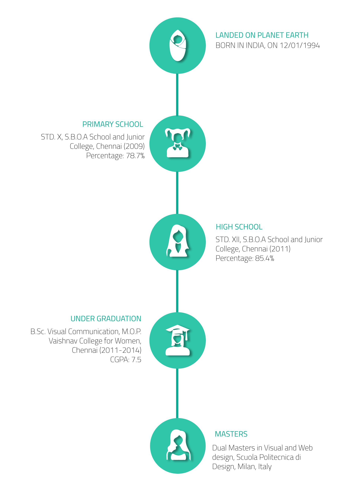
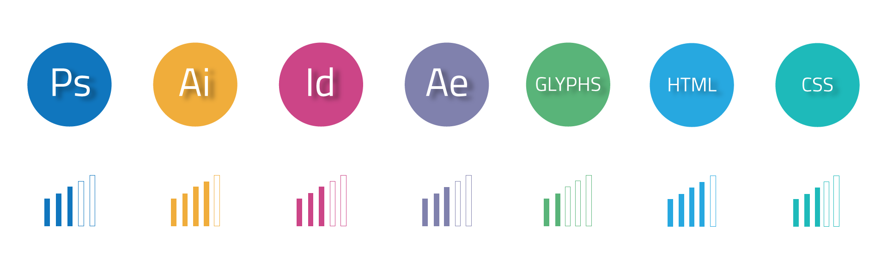
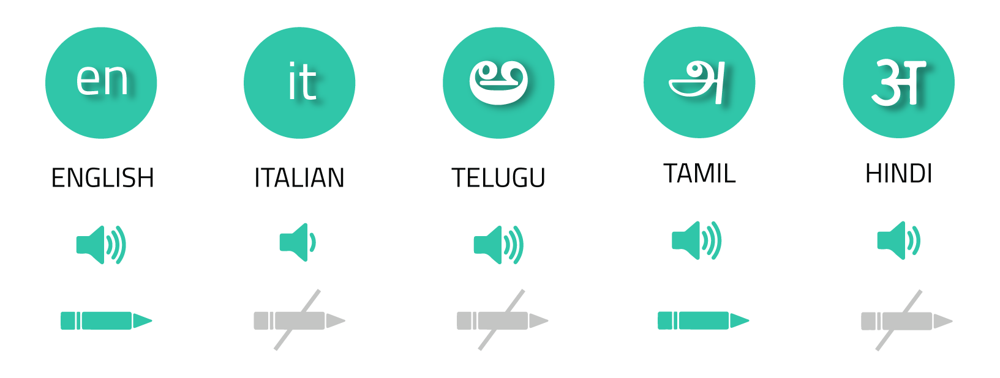

HELLO/
CIAO/
VANAKKAM/
NAMASKARAM/
NAMASTE
I’m Sindhura Thulasi, a Graphic designer and an UI/UX designer from India, pursuing Dual Masters in Visual and Web design at Scuola Politecnica di Design, Milan.
The mere thought that someone has designed each and everything surrounded by us has always amazed me. Since when I was a kid I have always been very ardent about drawing and creating new things. Every last page of my school notebooks were always filled with abstract doodles, which slowly started moulding into definite shapes and later grew up to be my passion. Designing has always given me an immeasurable amount of happiness which is the soul reason why I chose to pursue my passion as my career. Thus I chose to do my Bachelors in Visual Communication in India. Soon after my bachelors, I started to intern in different fields of my interest in my country. I interned in an advertising agency, J.Walter Thompson, then in a social media marketing agency (echoVME) and then in a branding agency (Vishnu Mohan Sutras). Finally landed in Milan to reach a step closer to my ambition of making a space for myself in the feild of design.
DOWNLOAD MY CV
SKILLS

LANGUAGES

HOBBIES